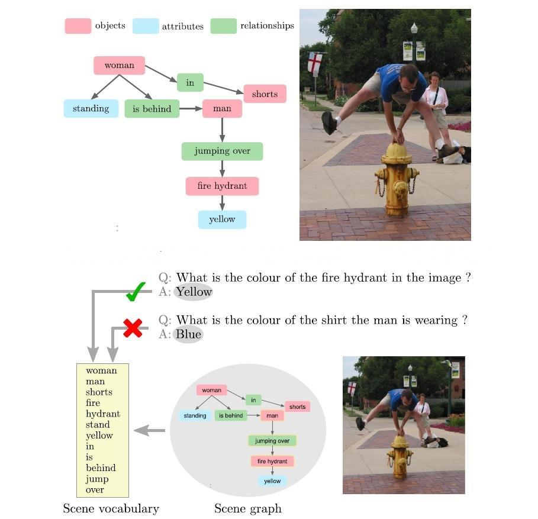

Data publicării: 17.01.2020
Autor articol: Anca Ignat
Problema întrebărilor vizuale [1]-[6], încearcă să combine două domenii, şi anume computer vision, care se ocupă de înţelegerea informaţiei vizuale, şi prelucrarea limbajului natural, care încearcă să dea înţeles textelor. În forma cea mai obişnuită a întrebărilor vizuale (VQA), la intrare avem o imagine şi o întrebare formulată textual legată de conţinutul imaginii (vezi Fig. 1). Trebuie dedus răspunsul corect, care de obicei conţine doar câteva cuvine sau o propoziţie scurtă. Variante posibile includ răspunsuri binare (da / nu) sau răspunsuri cu alegere multiplă în care sunt propuse mai multe răspunsuri posibile. O sarcină strâns legată de această problemă este şi situaţia în care o afirmație care descrie imaginea trebuie completată cu unul sau mai multe cuvinte lipsă. Aceste afirmații se referă esențial la întrebări formulate în formă declarativă. O distincție majoră între VQA și problema analizei de conţinut din computer vision este aceea că întrebarea la care trebuie să se răspundă nu este cunoscută de la început. În problemele tradiționale, cum ar fi segmentarea sau detectarea obiectelor, singura întrebare la care trebuie să răspundă un algoritm este predeterminată și se modifică doar imaginea de intrare pentru a putea da răspunsul corect. În schimb, în VQA, nu va fi cunoscută în prealabil întrebarea, deci nu vom şti setul de operații de prelucrare de imagini necesare pentru a răspunde întrebării. În acest sens, trebuie făcută o analiză mult mai în profunzime a imaginii pentru a putea da răspunsul corect. VQA este în strânsă legătură cu problema răspuns la întrebări textuale (TQA). Această problemă a fost intens studiată de cei care tratează problemele de prelucrare a limbajului natural, VQA poate fi privita ca o extensie a TQA la care se adaugă informația vizuală.
Vom trece în revistă în continuare câteva abordări în rezolvarea problemei VQ. Un mod de a trata această problemă este prin a face încorporări comune. Se folosesc rețele neuronale convoluțiunile (CNN) și rețele neuronale recurente (RNN) pentru a învăța şi include perechi de tip (imagine, propoziție) într-un spațiu de trăsături comun. Acest lucru permite ca rezultatele obținute să fie transmise unui clasificator cu ajutorul căruia se prezice un răspuns la întrebarea vizuală pusă. O reprezentare într-un spațiu comun permite învățarea interacțiunilor și efectuarea inferenței asupra întrebării (textului) și a conținutului imaginii. Practic, reprezentările imaginii sunt obținute cu rețelele neuronale convoluțiunile (CNN) pre-antrenate pentru recunoașterea obiectului. Reprezentările textului sunt obținute cu încorporări de cuvinte pre-antrenate pe corpuri mari de text. Încorporările cuvintelor individuale ale unei întrebări sunt apoi transmise de obicei unei rețele neuronale recurente pentru a capta tipare sintactice și pentru a gestiona secvențele cu lungime variabilă.
Un alt mod de a trata această problemă este prin urmărirea mecanismelor de atenție. Această abordare o îmbunătățește pe precedenta prin focalizarea asupra unor părți specifice ale parametrilor de intrare (imagine şi/sau întrebare). O limitare a majorității modelelor prezentate mai sus este aceea că se utilizează caracteristici globale (la nivel de imagine) pentru a reprezenta inputul vizual. Aceasta poate include informații irelevante sau legate de zgomotul din imagine în etapa de predicție/ antrenare. Scopul mecanismelor de atenție este de a aborda această problemă prin utilizarea informațiilor locale din imagine și astfel se permite modelului să atribuie o importanță diferită caracteristicilor din diferite regiuni ale imaginii. Se constată că mecanismele de atenție îmbunătățesc precizia generală a tuturor seturilor de date VQA, dar la o inspecția mai atentă după tipul de întrebare, se observă că acest tip de abordare nu aduce îmbunătățiri în întrebărilor binare (da / nu).
Modelele compoziționale permit adaptarea calculelor efectuate pentru fiecare problemă în parte. De exemplu, unii autori folosesc un parser pentru a descompune întrebarea dată, şi apoi se construiește o rețea neuronală din module a căror compunere reflectă structura întrebării.
O direcție de cercetare din ce în ce mai populară în proiectarea rețelelor neuronale artificiale este de a lua în considerare arhitecturi modulare. Această abordare implică conectarea unor module distincte concepute pentru capabilitățile specifice dorite, cum ar fi memoria sau tipuri de raționament specifice.
Neural Module Networks (NMN (NMN) și Memoria Dinamică sunt concepute special pentru VQA, cu intenția de a exploata structura lingvistică compozițională a întrebărilor. NMN-urile reflectă complexitatea unei întrebări într-o rețea care este asamblată specific pentru fiecare instanță a problemei.
Rețelele cu Memorie Dinamică (Dynamic Memory Networks, DMN) sunt rețele neuronale cu o arhitectură modulară specială. DMN-urile se încadrează în categoria mai largă a rețelelor cu memorie augumentată, care efectuează operațiuni de citire și scriere pe o reprezentare internă a intrării.
Modele care utilizează baze de cunoștințe externe au abordări îmbunătățite datorită utilizării datelor externe prin interogarea bazelor structurate de cunoștințe. Informațiile disponibile din bazele de cunoștințe variază de la cele de bun-simț până la nivel enciclopedic și pot fi accesate fără a fi nevoie să fie disponibile la momentul antrenării. Legarea acestor baze de cunoștințe cu metodele VQA permite separarea raționamentului de reprezentarea cunoștințelor anterioare într-un mod practic și scalabil.
Bazele de date pentru evaluarea rezultatelor
O serie de seturi de date au fost realizate special pentru cercetarea problemei VQA. Acestea conțin, cel puțin, triplete formate dintr-o imagine, o întrebare și răspunsul corect al acesteia. Uneori sunt furnizate adnotări suplimentare, cum ar fi legendele de imagine, regiunile din imagine care susțin răspunsurile sau răspunsurile corecte în întrebările cu alegere multiplă. Seturile de date și întrebările din seturile de date variază foarte mult în complexitatea lor, în ceea ce privește raționamentul și informațiile non-vizuale (de exemplu, „bun-simț”) necesare pentru a deduce răspunsul corect.
O caracteristică majoră care diferențiază diferitele seturi de date este tipul imaginilor folosite, care pot fi clasificate în mare ca imagini naturale, clip art sau sintetice. O a doua diferență cheie între seturile de date este formatul de întrebare-răspuns: cu răspuns complex vs alegere multiplă. Alte diferențe cheie între seturile de date se referă la dimensiunea acestora, tipul întrebărilor lor, distribuția lungimilor întrebărilor, procedura de colectare a acestora (intrare umană față de generarea automată) și valorile de evaluare recomandate.
Cele mai utilizate seturi de date sunt DAQUAR, COCO-QA și VQA-real. Visual Genome este în prezent cel mai mare set de date disponibil pentru VQA. Oferă avantajul unic al adnotărilor structurate generate de om pentru fiecare imagine sub formă de grafurile de scenă. Grafurile de scenă actuale sunt abstractizări intermediare ale scenelor, dar nu sunt suficient de cuprinzătoare pentru a surprinde toate elementele necesare pentru VQA. De exemplu, atributele vizuale la nivel scăzut, cum ar fi culoarea și materialul, se pierd în această reprezentare și, prin urmare, este necesar să accesăm imaginea pentru a răspunde la întrebările care le implică. Atributele scenei globale, cum ar fi locația, vremea sau ora din zi sunt rareori etichetate, dar sunt adesea implicate în întrebările „unde” și „când”.

Referințe bibliografice
- Lu, J., Yang, J., Batra, D., & Parikh, D. (2016). Hierarchical question-image co-attention for visual question answering. In Advances in neural information processing systems (pp. 289-297).
- Anderson, P., He, X., Buehler, C., Teney, D., Johnson, M., Gould, S., & Zhang, L. (2018). Bottom-up and top-down attention for image captioning and visual question answering. In Proceedings of the IEEE conference on computer vision and pattern recognition (pp. 6077-6086).
- Antol, S., Agrawal, A., Lu, J., Mitchell, M., Batra, D., Lawrence Zitnick, C., & Parikh, D. (2015). Vqa: Visual question answering. In Proceedings of the IEEE international conference on computer vision (pp. 2425-2433).
- Xiong, C., Merity, S., & Socher, R. (2016, June). Dynamic memory networks for visual and textual question answering. In International conference on machine learning (pp. 2397-2406).
- Shih, K. J., Singh, S., & Hoiem, D. (2016). Where to look: Focus regions for visual question answering. In Proceedings of the IEEE conference on computer vision and pattern recognition (pp. 4613-4621).
- Wu, Q., Teney, D., Wang, P., Shen, C., Dick, A., & van den Hengel, A. (2017). Visual question answering: A survey of methods and datasets. Computer Vision and Image Understanding, 163, 21-40.